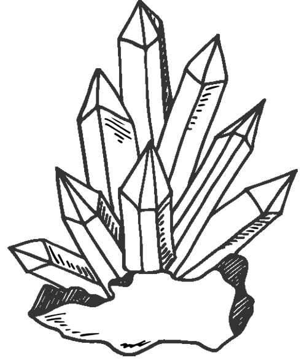

For those distracted by the pretty things
Get to know your favorite rocks a little better
Just a fun little side project
I wanted to practice building a WordPress site on my own without the guidance of the Skillcrush class.
This site was originally hand-coded to get the layout in place, and then was converted into a WordPress page using the Elementor plug-in.
Even though this isn't a "real" site, get to know a little bit about crystals while you're looking around!
Credits linked here
| Apophyllite |
The name apophyllite is derived from the Greek "apophylliso", meaning "it flakes off", a reference to this class’s tendency to flake apart when heated, due to water loss. These minerals are typically found as secondary minerals in vesicles in basalt or other volcanic rocks.
Read more →| Rose quartz |
In the Middle Ages, medical practitioners used quartz in their healing potions. Early cultures of the Americas used quartz amulets. Known as the "love stone," it was said to balance the emotions and to heal anger and disappointment.
Read more →| Smokey quartz |
Smokey quartz has been used as jewelry throughout history because it is really easy to cut as a gem. Some Native American tribes used it as gems for their ceremonial wands. In China smokey quartz was made into snuff bottles and was used by the Romans who used it for carving intaglio seals.
Read more →If you want to do more than just lovingly stare at these natural wonders, follow these simple care instructions and get a little woo-woo
01
Wash them well
A simple rinse under the faucet will do here. If you live near the ocean or a stream it’s optimal to wash them there.
02
Bask in the sun
It’s nice to give them a little reboot with the sun’s energy, but not for too long. Through sun rise is a great rule of thumb.
03
Charge with intentions
Charging crystals with your energy helps them stay focused. You can charge all of your crystals at once by imagining them soaked in healing energy.
Instagram grid placeholder
Monthly Love Letters